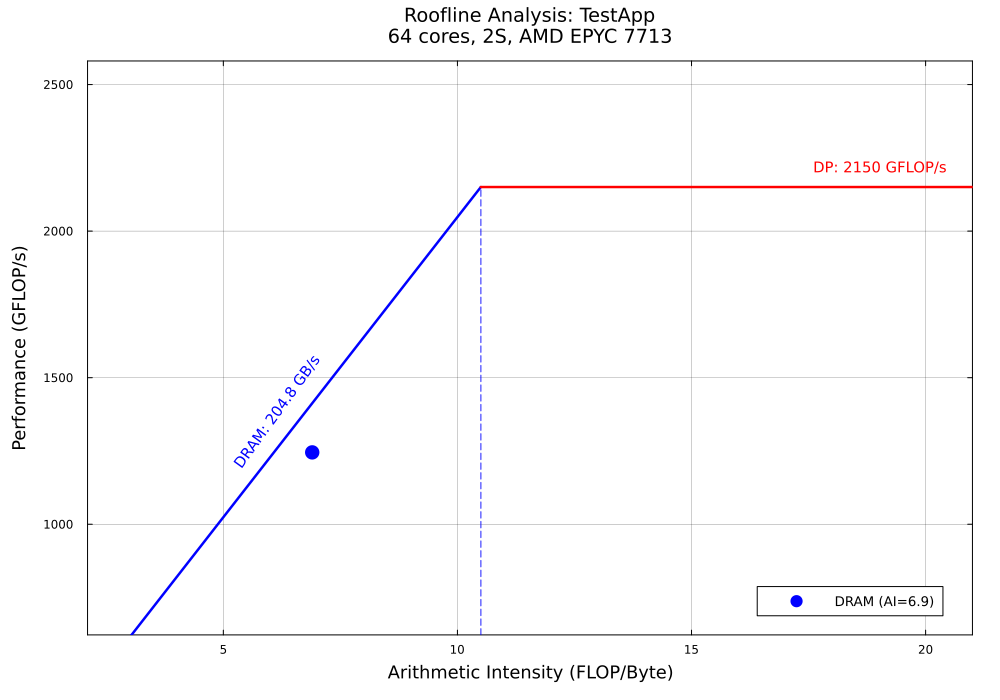
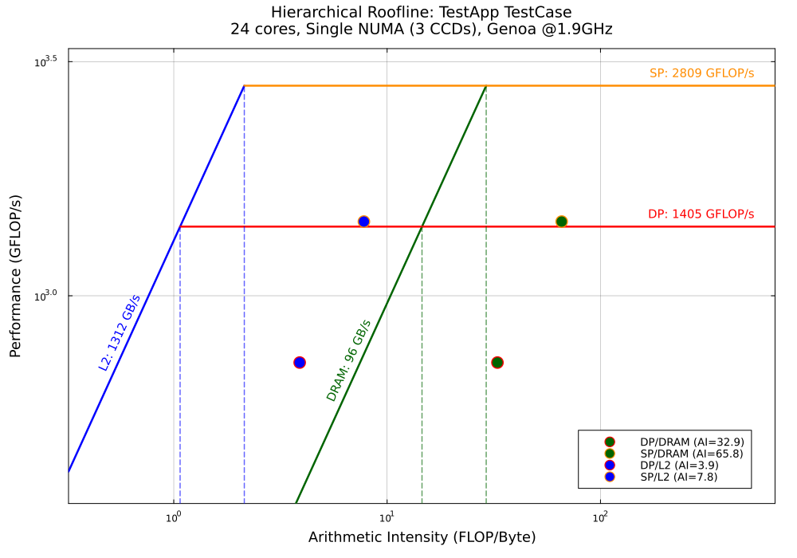
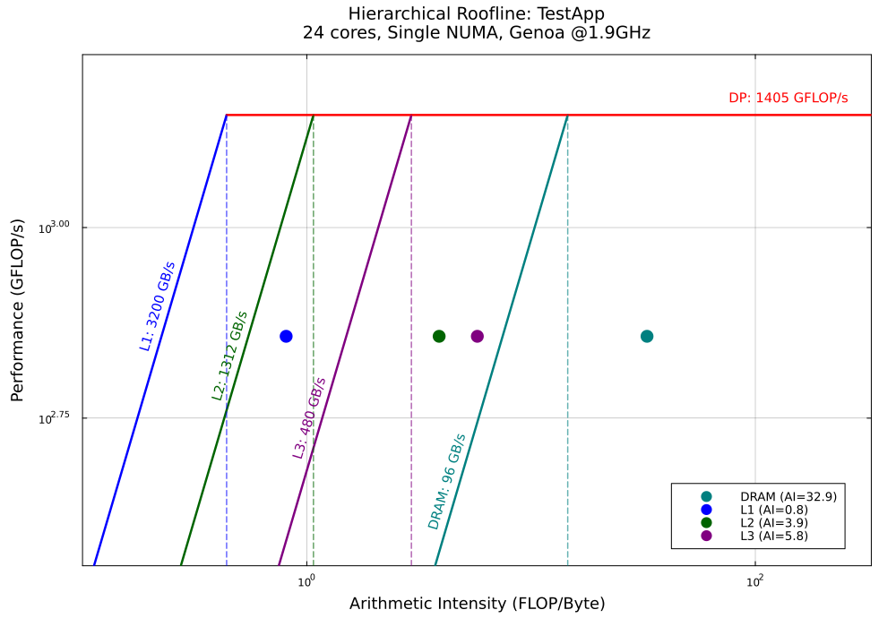
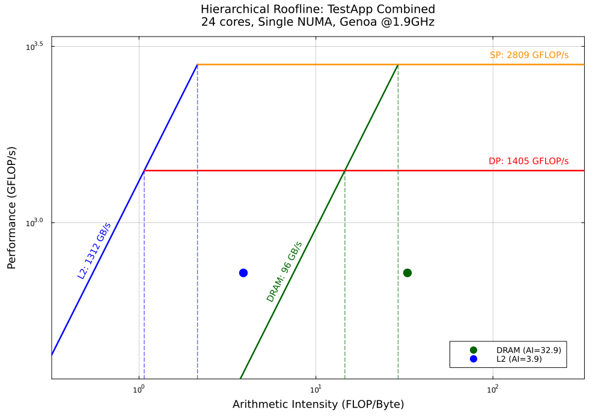
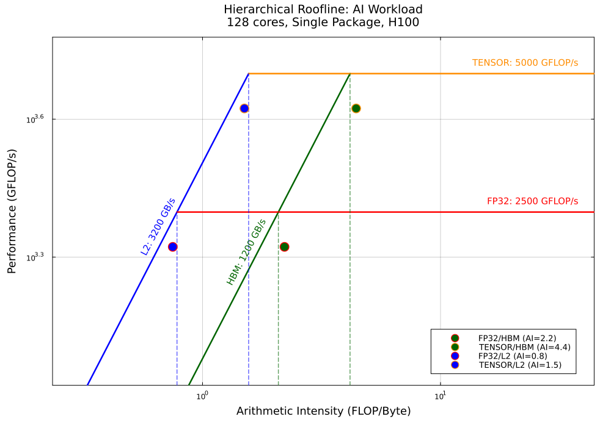
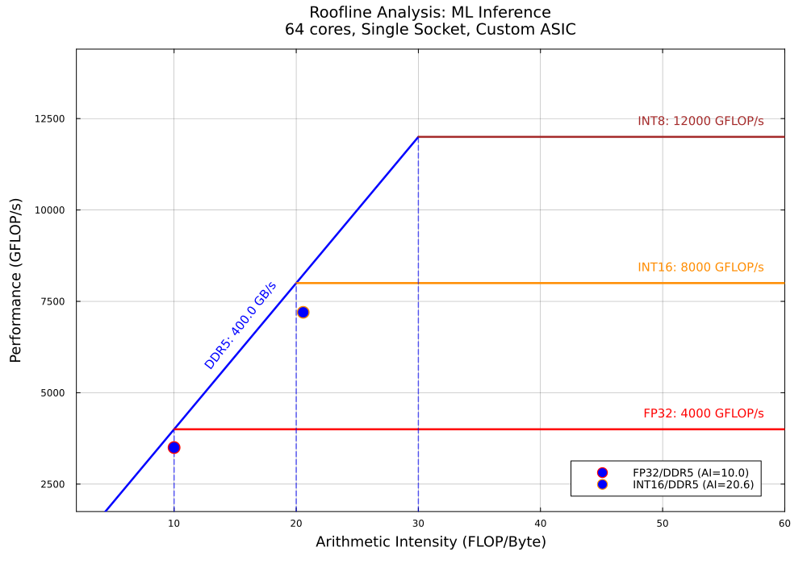
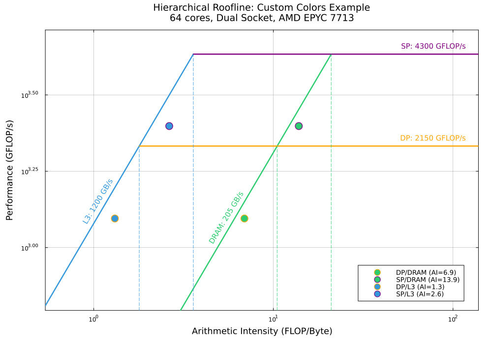

Examples
This page showcases example Roofline plots generated by RooflinePlots.jl, demonstrating the package's capabilities across different configurations.
All examples shown here are auto-generated during documentation builds from the integration test suite.
Simple Configuration
Single Memory Level with Single Compute Type
The most basic roofline configuration with DRAM and Double Precision compute.

Configuration:
- Memory: DRAM only
- Compute: DP (Double Precision) only
- Mode: Simple (linear scales)
Performance Table:
| Metric | Value |
|----------------------------|------------------------|
| Measured DP Compute | 1245.2 GFLOP/s |
| Percentage of Peak DP | 57.9% |
| Measured DRAM Bandwidth | 180.50 GB/s |
| Percentage of Peak DRAM BW | 88.1% |
| DP/DRAM AI | 6.90 FLOP/B |
| Bottleneck | Memory-bound (DP/DRAM) |
Hierarchical Memory
Two-Level Memory Hierarchy with Multiple Compute Types
This example shows L2 cache and DRAM with both DP and SP compute types.

Configuration:
- Memory: L2 cache, DRAM
- Compute: DP, SP
- Mode: Hierarchical (log-log scales)
Performance Table:
| Metric | Value |
|----------------------------|-----------------|
| Measured DP Compute | 720.0 GFLOP/s |
| Percentage of Peak DP | 51.2% |
| Measured SP Compute | 1440.0 GFLOP/s |
| Percentage of Peak SP | 51.3% |
| Measured L2 Bandwidth | 185.00 GB/s |
| Percentage of Peak L2 BW | 14.1% |
| Measured DRAM Bandwidth | 21.89 GB/s |
| Percentage of Peak DRAM BW | 22.7% |
| DP/DRAM AI | 32.89 FLOP/B |
| SP/DRAM AI | 65.78 FLOP/B |
| DP/L2 AI | 3.89 FLOP/B |
| SP/L2 AI | 7.78 FLOP/B |
| Bottleneck | Compute-bound |
Full Memory Hierarchy
Complete cache hierarchy demonstrating L1, L2, L3, and DRAM bandwidth limits.

Configuration:
- Memory: L1, L2, L3, DRAM (complete hierarchy)
- Compute: DP
- Mode: Hierarchical (log-log scales)
- Shows all cache levels and their bandwidth transitions
Performance Table:
| Metric | Value |
|----------------------------|-----------------|
| Measured DP Compute | 720.0 GFLOP/s |
| Percentage of Peak DP | 51.2% |
| Measured L1 Bandwidth | 890.00 GB/s |
| Percentage of Peak L1 BW | 27.8% |
| Measured L2 Bandwidth | 185.00 GB/s |
| Percentage of Peak L2 BW | 14.1% |
| Measured L3 Bandwidth | 125.00 GB/s |
| Percentage of Peak L3 BW | 26.0% |
| Measured DRAM Bandwidth | 21.89 GB/s |
| Percentage of Peak DRAM BW | 22.7% |
| DP/DRAM AI | 32.89 FLOP/B |
| DP/L1 AI | 0.81 FLOP/B |
| DP/L2 AI | 3.89 FLOP/B |
| DP/L3 AI | 5.76 FLOP/B |
| Bottleneck | Compute-bound |
Combined Measurements
Combined DP+SP Measurement
Hardware counters often measure multiple compute types together. This example shows how to handle combined measurements.

Configuration:
- Memory: L2 cache, DRAM
- Compute: DP and SP roofs (both with same combined measurement)
- Measurement: Single hardware counter value for both DP and SP
Performance Table:
| Metric | Value |
|----------------------------|-----------------|
| Measured DP+SP Compute | 720.0 GFLOP/s |
| Percentage of Peak DP | 51.2% |
| Percentage of Peak SP | 25.6% |
| Measured L2 Bandwidth | 185.00 GB/s |
| Percentage of Peak L2 BW | 14.1% |
| Measured DRAM Bandwidth | 21.89 GB/s |
| Percentage of Peak DRAM BW | 22.7% |
| DP+SP/DRAM AI | 32.89 FLOP/B |
| DP+SP/L2 AI | 3.89 FLOP/B |
| Bottleneck | Compute-bound |
Custom Type Names
HBM and Tensor Cores
Modern accelerators with High Bandwidth Memory and specialized compute units.

Configuration:
- Memory: HBM (High Bandwidth Memory), L2 cache
- Compute: TENSOR cores, FP32
- Demonstrates support for arbitrary custom type names
Performance Table:
| Metric | Value |
|---------------------------|-------------------------------|
| Measured FP32 Compute | 2100.0 GFLOP/s |
| Percentage of Peak FP32 | 84.0% |
| Measured TENSOR Compute | 4200.0 GFLOP/s |
| Percentage of Peak TENSOR | 84.0% |
| Measured L2 Bandwidth | 2800.00 GB/s |
| Percentage of Peak L2 BW | 87.5% |
| Measured HBM Bandwidth | 950.00 GB/s |
| Percentage of Peak HBM BW | 79.2% |
| FP32/HBM AI | 2.21 FLOP/B |
| TENSOR/HBM AI | 4.42 FLOP/B |
| FP32/L2 AI | 0.75 FLOP/B |
| TENSOR/L2 AI | 1.50 FLOP/B |
| Bottleneck | Memory-bound (FP32+TENSOR/L2) |
Custom Types with Combined Groups
Quantized inference workload with INT8, INT16 combined, and FP32 separate.

Configuration:
- Memory: DDR5
- Compute: INT8, INT16 (measured together), FP32 (measured separately)
- Demonstrates selective grouping of measurements
Performance Table:
| Metric | Value |
|-----------------------------|--------------------------|
| Measured FP32 Compute | 3500.0 GFLOP/s |
| Percentage of Peak FP32 | 87.5% |
| Measured INT8+INT16 Compute | 7200.0 GFLOP/s |
| Percentage of Peak INT8 | 60.0% |
| Percentage of Peak INT16 | 90.0% |
| Measured DDR5 Bandwidth | 350.00 GB/s |
| Percentage of Peak DDR5 BW | 87.5% |
| FP32/DDR5 AI | 10.00 FLOP/B |
| INT8+INT16/DDR5 AI | 20.57 FLOP/B |
| Bottleneck | Memory-bound (INT8/DDR5) |
Custom Colors
Using custom user defined colors

Configuration:
- Memory: DRAM, L3
- Compute: DP, SP
- Memory Colors: "#3498DB","#2ECC71"
- Compute Colors = orange,purple
Generating Your Own Examples
To generate these examples yourself:
# Run integration tests (generates examples)
julia --project=. test/run_integration_tests.jl
# Clean up generated files
julia --project=. test/run_integration_tests.jl cleanAll example files are located in test/examples/:
- PNG files for plots
- Markdown files for performance tables
- README.md describing each example
Understanding the Plots
Plot Elements
- Diagonal lines: Memory bandwidth limits (different colors for each memory level)
- Horizontal lines: Compute performance ceilings (different colors for each compute type)
- Ridge points: Intersections showing transitions between memory-bound and compute-bound regions
- Measurement points: Your application's actual performance
- Circle markers: Individual measurements
- Triangle/Square markers: Combined measurements
Modes
Simple Mode (linear scales):
- Activated for single memory level
- Clear arithmetic intensity reading on x-axis
- Best for basic analysis
Hierarchical Mode (log-log scales):
- Activated for multiple memory levels
- Shows full memory hierarchy effects
- Ridge points clearly visible
- Best for analyzing cache effects
Bottleneck Identification
The plots help identify whether your application is:
- Memory-bound: Performance limited by data transfer speeds (below ridge point)
- Compute-bound: Performance limited by computational throughput (above ridge point)
See the User Guide for detailed explanations and the API Reference for programmatic usage.